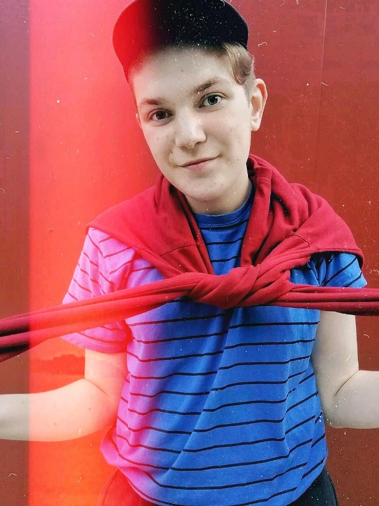

Немного о себе
Здравствуйте, меня зовут Бушуев Виктор, я родился в селе Зырянское, но в 7 лет переехал в деревню Кисловка. Там живу до сих пор.
Там, со 2 по 11 класс я учился в Кисловской СОШ.
Я давно понял, что хочу стать учителем. Всегда участвовал в днях самоуправления, которые ежегодно проходили в нашей школе на день учителя. Также мне всегда были интересны биология и химия. Исходя из этих факторов, мой выбор и пал на биолого-химический факультет Томского государственного педагогического университета!